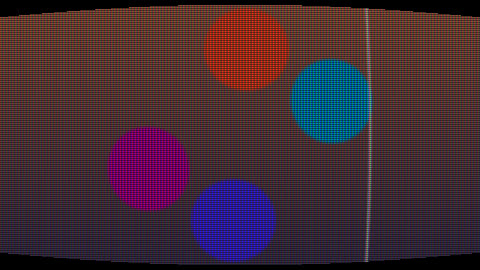

HomeAccueil / ExamplesExemples
CRT screenÉcran cathodique
Screen curvature, scanlines, red-green-blue mask and slight flicker.Courbure de l'écran, lignes de balayage, masque de trames rouge-vert-bleu et léger scintillement.

CategoryCatégorie: Post-processingPost-traitement - ecran_cathodique.glsl - 30 lineslignes - File on GitHubFichier sur GitHub
In the program: Examples, choose it, Add to the list. Or copy the code into a file next to the program and drop it on the window.Dans le programme : Exemples, choisissez-le, Ajouter à la liste. Ou copiez le code dans un fichier et glissez-le sur la fenêtre.
CodeCode
ecran_cathodique.glsl
// SPDX-License-Identifier: LicenseRef-ShaderToMP4-Proprietary
// Copyright (C) 2026 Patrick JAILLET. Tous droits reserves.
// fr: Écran cathodique — Courbure de l'écran, lignes de balayage, masque de trames rouge-vert-bleu et léger scintillement.
// en: CRT screen — Screen curvature, scanlines, red-green-blue mask and slight flicker.
vec3 scene(vec2 uv) {
float a = iTime * 0.5;
vec3 col = mix(vec3(0.1, 0.15, 0.4), vec3(0.9, 0.5, 0.3), uv.y * 0.5 + 0.5);
for (int i = 0; i < 4; i++) {
float f = float(i);
vec2 c = 0.35 * vec2(cos(a + f * 1.57), sin(a * 1.3 + f * 1.57));
col = mix(col, 0.5 + 0.5 * cos(f + vec3(0.0, 2.0, 4.0)), smoothstep(0.17, 0.15, length(uv - c)));
}
col = mix(col, vec3(1.0), smoothstep(0.012, 0.0, abs(uv.x - 0.5 * sin(a))) * 0.6);
return col;
}
void mainImage(out vec4 fragColor, in vec2 fragCoord) {
vec2 uv = (fragCoord - 0.5 * iResolution.xy) / iResolution.y;
vec2 q = uv * (1.0 + 0.15 * dot(uv, uv));
vec3 col = scene(q);
col *= 0.8 + 0.2 * sin(fragCoord.y * 3.14159);
vec3 mask = vec3(1.0);
float m = mod(fragCoord.x, 3.0);
mask = m < 1.0 ? vec3(1.0, 0.6, 0.6) : (m < 2.0 ? vec3(0.6, 1.0, 0.6) : vec3(0.6, 0.6, 1.0));
col *= mask * (0.97 + 0.03 * sin(iTime * 90.0));
if (abs(q.x) > 0.89 * iResolution.x / iResolution.y * 0.5 + 0.5 || abs(q.y) > 0.5) col = vec3(0.0);
fragColor = vec4(col, 1.0);
}